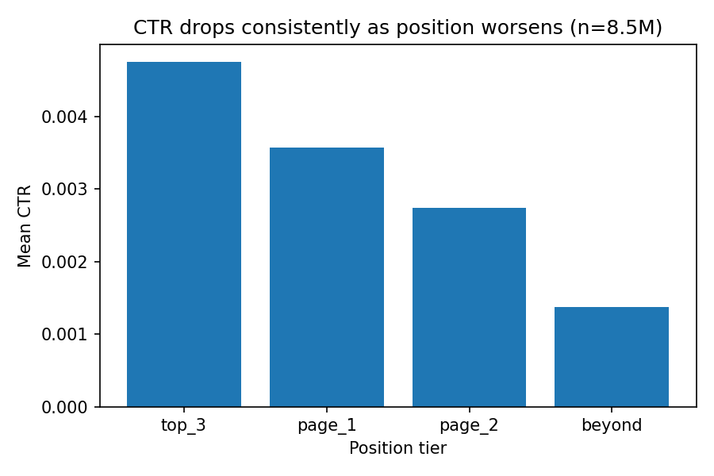

A content reviewer at FlyRank works with a limited amount of time and a large, growing portfolio of client pages. The question this project asks is simple to state and easy to get wrong by assumption: which safe, observable signals are actually worth trusting when deciding what to review first, and how strong is each association really, not just whether it "sounds" true.
Getting this wrong has a real cost. Trusting a weak or coincidental signal wastes review time on pages that were never going to improve for that reason. Ignoring a signal that genuinely matters means missing a real opportunity. This project extends exploratory checks first run on a small starter dataset (avg_position vs ctr, content_age_days vs trend_direction) to the full warehouse release, where patterns can be measured at a scale large enough to trust.
This analysis uses the FlyRank ML Internship warehouse release on Hugging Face
(FlyRank/internship-warehouse, build
flyrank_pseudonymized_warehouse_release_v20260703), a gated, pseudonymized dataset
built specifically for this internship program.
Excluded from this analysis, and why:
This is a signal analysis project, not a classification task. There is no single label being predicted here. Instead, three signals were each measured against an outcome using effect sizes: correlation coefficients for continuous to continuous comparisons, and bucketed group comparisons for a clearer, less linear reading of the same relationship.
A separate, previously validated comparison is carried forward as supporting evidence. A transparent baseline rule ("stale but visible": not updated in 180+ days and still receiving 500+ impressions in the last 90 days) was compared against a trained Decision Tree and Random Forest, all evaluated on the same client grouped holdout split. This split matters because pages from the same client can share patterns a random split would let leak between train and test, making a model look better than it really is.
Client and content identifiers were used only for grouping and joining, never as model features. No product decision flags exist in this dataset to leak from. Every signal analyzed here is an already observed, historical measurement, not a value derived circularly from another signal in the same check.

Mean CTR by position tier, n = 8,578,172 rows, January to March 2026.
The linear correlation is weak (r = -0.032), but the bucketed pattern is clear and consistent: mean CTR drops from 0.48% at top 3 positions, to 0.36% on page 1, to 0.27% on page 2, to 0.14% beyond page 2. This confirms, at a much larger scale, the same pattern first observed on a 30,000 row starter slice.
| Content age | n | Mean engagement rate |
|---|---|---|
| 0 to 90 days | 189,538 | 4.24% |
| 91 to 180 days | 173,463 | 5.65% |
| 181 to 365 days | 172,386 | 4.78% |
| 365+ days | 50,181 | 5.23% |
No consistent direction appears across age buckets. This check covers only 585,849 rows (6.8% of the position/CTR sample), since most warehouse rows lack usable analytics tracking data.
Correlation coefficient: 0.011 (n = 8,578,172), essentially zero. Longer content is not, by itself, associated with greater search visibility in this data. This is a genuine negative result, reported honestly rather than reframed into a stronger story than the numbers support.
| Method | Precision@20 | Precision@50 | Validation |
|---|---|---|---|
| Baseline rule (stale but visible) | 0.65 | 0.64 | Client grouped holdout |
| Decision Tree | 0.60 | 0.56 | Client grouped holdout |
| Random Forest | 0.45 | 0.56 | Client grouped holdout |
The simple, transparent baseline rule outperformed both trained models at precision@20, and matched or beat them at precision@50. A random forest trained and evaluated on a plain, random (non grouped) split reached 0.950 precision@20, a number that looked excellent but dropped to 0.450 once genuinely unseen clients were used for testing, evidence that the higher number was memorization, not generalization.
Based on the validated baseline rule and the confirmed position CTR signal above, pages are grouped into two review queues:
Human review is required before acting on any flagged page: confirm the page is not already scheduled for consolidation, and confirm a refresh or snippet edit is actually the right lever before spending review time on it.
All notebooks, feature engineering code, and validation logic behind this paper are available
in the project repository, under work/notebooks/. Each weekly notebook documents
one stage of this project, from framing the research question through the final action
playbook.
Repository: github.com/aisyahnabillah/ml-internship